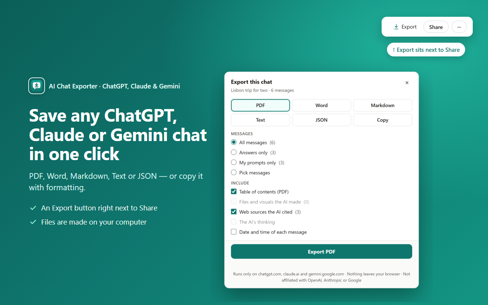

How to export a whole Gemini conversation (not just one answer)
Quick answer: open the chat on gemini.google.com, click Export next to the ⋮ menu at the top right, pick a format and click the big button. The whole conversation is saved — including Deep Research reports with their sources and Canvas documents.
The ways Google gives you
- Share & export → Export to Docs — one answer at a time, not the conversation.
- Google Takeout — a ZIP of your activity, meant as a backup rather than a readable file of one chat.
- Print the page — the website layout; long chats may not print completely.
The one-click way
- Install AI Chat Exporter: ChatGPT, Claude & Gemini (free).
- Open the chat on gemini.google.com.
- Click Export (next to the ⋮ menu), choose PDF, Word or Markdown and click the big button.
Long chats are read in full — no scrolling up first.

What the file keeps
- Formulas as real math (Word gets editable equations), not raw code.
- Tables, code blocks with colours, headings, lists and links.
- Web sources as numbered [1] [2] links with a source list under each answer.
- Names and sizes of files you uploaded; optionally the AI's thinking summary and the time of each message.
- Only the messages you want: all, only the answers, only your prompts, or ones you pick.
- Deep Research reports with numbered sources, and Canvas documents.
Is it private?
Yes. The file is made on your own computer, inside your browser. No chat content is sent to us — there is no CarryAll server. No account, no analytics, no ads. Details in the privacy policy.
Try it free
Free with no daily limits and no sign-in. Works on chatgpt.com, claude.ai and gemini.google.com.
Add to Chrome — it's freeQuestions
Does it export Deep Research reports?
Yes, the full report with its sources as numbered links.
Do I have to scroll to load the whole chat first?
No. The whole conversation is read for you.
Can I export only Gemini's answers?
Yes: choose "Answers only", or pick messages yourself.
Is it free?
Exporting one chat at a time is free and unlimited, with no sign-in.
I made this extension (CarryAll). The manual ways above work without it — use whichever suits you.